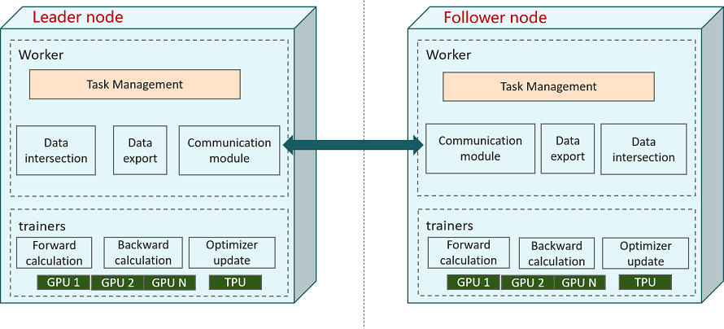

Vertical Federated Deployment¶

This document explains how to use and deploy the vertical federated learning framework.
The MindSpore Vertical Federated Learning (VFL) physical architecture is shown in the figure:

As shown above, there are two participants in the vertical federated interaction: the Leader node and the Follower node, each of which has processes in two roles: FLDataWorker and VFLTrainer:
FLDataWorker
The functions of
FLDataWorkermainly includes:Dataset intersection: obtains a common user intersection for both vertical federated participants, and supports a privacy dataset intersection protocol that prevents federated learning participants from obtaining ID information outside the intersection.
Training data generation: After obtaining the intersection ID, the data features are expanded to generate the mindrecord file for training.
Open management surface:
RESTfulinterface is provided to users for cluster management.
In a federated learning task, there is only one
Scheduler, which communicates with theServerthrough TCP protocol.VFLTrainer
VFLTraineris the main body that performs the vertical federated training tasks, and performs the forward and reverse computation after model slicing, Embedding tensor transfer, gradient tensor transfer, and reverse optimizer update. The current version supports single-computer single-card and single-computer multi-card training modes.In the MindSpore federated learning framework,
Serveralso supports elastic scaling and disaster recovery, enabling dynamic provisioning of hardware resources without interruption of training tasks.
FLDataWorker and VFLTrainer are generally deployed in the same server or container.
Preparation¶
It is recommended to use Anaconda to create a virtual environment for the following operations.
Installing MindSpore¶
MindSpore vertical federated supports deployment on x86 CPU, GPU CUDA and Ascend hardware platforms. The latest version of MindSpore can be installed by referring to MindSpore Installation Guide.
Installing MindSpore Federated¶
Compile and install via source code.
git clone https://gitee.com/mindspore/federated.git -b r0.1
cd federated
bash build.sh
For bash build.sh, accelerate compilation through the -jn option, e.g. -j16, and download third-party dependencies from gitee instead of github by the -S on option.
Once compiled, find the Federated whl installation package in the build/package/ directory to install.
pip install mindspore_federated-{version}-{python_version}-linux_{arch}.whl
Verifying installation¶
Execute the following command to verify the installation. The installation is successful if no error is reported when importing Python modules.
from mindspore_federated import FLServerJob
Running the Example¶
A running sample of FLDataWorker can be found in Vertical federated learning data access.
A running sample of VFLTrainer can be found in Vertical federated learning model training - Wide&Deep Recommended Application.